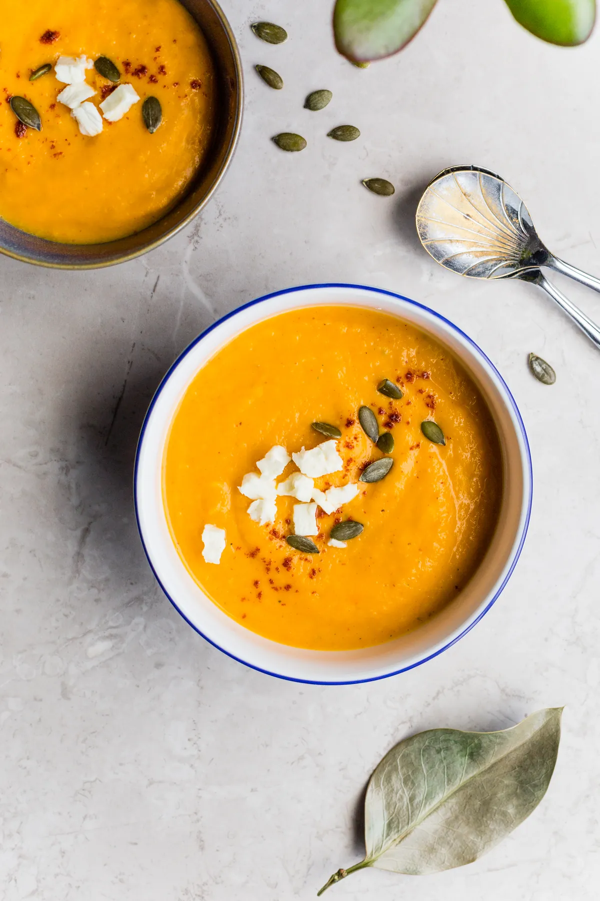

Autumn · soup · serves 6
Butternut Squash Soup with Sage Butter
Roasted rather than boiled, which is the whole difference, and finished at the table with butter cooked until it smells of hazelnuts. One squash, one onion, one pan and about an hour.

Why this one is worth the extra half hour
Most squash soup is made by simmering raw squash in stock until it gives up, then blending it. It works, in the sense that you end up with soup. What you do not end up with is flavour, because boiling is a wet process and almost everything interesting that happens to squash happens dry, at temperatures above the boiling point of water, when the sugars at the cut surface start to brown.
So this recipe roasts the squash first, cut side down on a hot sheet pan, until the flat face has gone properly dark in patches and the flesh has collapsed. Thirty-five minutes, unattended, while you do something else. The squash that comes out is already most of the way to being soup; the stock that follows is really just there to thin it out and carry salt.
The second thing that makes a difference is finishing in the bowl rather than the pan. Browned butter stirred into a potful goes cloudy and disperses within a minute. Spooned over the top of each serving with a few fried sage leaves, it stays as a distinct dark pool that you break into as you eat, and every spoonful tastes slightly different. It also means the pan of soup keeps for four days in the refrigerator without the butter going anywhere.
One honest caveat: this soup is only as good as the squash. A butternut that has sat in a warm supermarket since September will be watery and bland no matter what you do to it. Buy one that feels heavy for its size with a hard, matte skin you cannot dent with a thumbnail and a stem still firmly attached. A soft stem end or a glossy skin means it was picked early.
What you need before you start
Nothing unusual, but two things are worth checking. You need a sheet pan large enough that the squash halves sit flat without touching — if they crowd, they steam instead of roasting and the whole point is lost. And you need something to blend with. A stick blender in the pot is easiest and makes the least washing up; a jug blender gives a silkier result but you must work in two batches and leave the lid vented, because hot soup in a sealed blender expands and will take the lid off.
Butternut Squash Soup with Sage Butter
Equipment
- A heavy sheet pan, at least 13 by 18 inches
- A large saucepan or Dutch oven, 4 quarts or more
- A stick blender, or a jug blender you can vent
- A small frying pan for the butter
- A sturdy chef's knife — squash skin is hard work
Ingredients
For the soup
- 3 lbbutternut squash (1 large or 2 small), halved lengthwise and seeded
- 3 Tbspolive oil
- 1 largeyellow onion, roughly chopped
- 2 clovesgarlic, peeled and left whole
- 4 cupsvegetable or chicken stock, plus up to 1 cup more to thin
- 1 tspfine sea salt, plus more to finish
- 1/4 tspblack pepper, freshly ground
- 1 Tbspcider vinegar
For the sage butter
- 4 Tbspunsalted butter (2 oz)
- 16fresh sage leaves
- 1 pinchflaky salt
To finish, optional
- 1/4 cupheavy cream, or leave it out — see the note below
- 2 Tbspsquash seeds, cleaned and toasted
Method
- Heat the oven to 425°F. Put a rack in the middle.
- Rub the cut faces of the squash with 2 tablespoons of the oil and a generous pinch of salt. Lay them cut side down on the sheet pan, with the chopped onion and the whole garlic cloves scattered around them and turned in the last tablespoon of oil.
- Roast for 35 to 45 minutes. It is done when a knife goes into the thickest part with no resistance at all and the cut face, when you lift a half, is properly browned in patches — not golden, brown. If the onions are catching before the squash is soft, push them to the cooler edge of the pan or lift them out.
- Let everything sit until you can handle it, about 10 minutes. Scoop the flesh out of the skins with a spoon; it should come away in one motion. Discard the skins.
- Put the squash flesh, onion and garlic into the saucepan with 4 cups of stock, the teaspoon of salt and the pepper. Bring to a bare simmer over medium heat, which takes about 5 minutes.
- Blend until completely smooth. With a stick blender, keep the head fully submerged and work it around the pan for a good 2 minutes — longer than feels necessary is right. With a jug blender, fill it no more than half full, remove the centre cap, hold a folded towel over the gap and start on the lowest speed.
- Put the pan back on low heat and judge the thickness. It should coat the back of a spoon and then slide off slowly. Add more stock a splash at a time until it does. Stir in the cider vinegar, taste, and add salt until it stops tasting flat. This usually takes more salt than people expect; go a quarter teaspoon at a time.
- Make the sage butter last, just before serving. Melt the butter in the small frying pan over medium heat. It will foam, then the foam will subside, and then the milk solids on the bottom will turn golden and the whole thing will smell of hazelnuts — about 3 to 4 minutes from melted. Drop in the sage leaves; they will crackle hard for 20 seconds and go still and crisp. Take the pan off the heat immediately.
- Ladle the soup into warm bowls. Spoon the browned butter over each one, lay two or three crisp sage leaves on top, add a pinch of flaky salt and, if you are using it, a thread of cream.
Make it easier
- Cutting the squash is the hard part. Microwave the whole squash for 2 minutes first and the skin softens enough to make the knife safe. Cut the bulb end off the neck first, then halve each piece.
- Do not peel it. You are roasting it in the skin and scooping it out. Peeling raw butternut is twenty minutes of unpleasant work for no benefit at all.
- Roast it a day ahead. Scooped squash keeps covered in the refrigerator for 3 days, which turns this into a 15-minute soup on the night.
- The vinegar is not optional. One tablespoon in a potful will not taste sour; it will make the squash taste more like itself. If the soup tastes dull and more salt is not fixing it, the thing it wants is acid.
Storage and reheating
The soup keeps 4 days covered in the refrigerator and 3 months in the freezer. Freeze it before adding any cream — dairy splits when it thaws and no amount of whisking brings it back. Flat freezer bags laid down to set are worth the small effort, because a flat slab thaws in twenty minutes in a sink of cool water where a round tub takes half a day.
Reheat gently over medium-low heat, stirring now and then. It will have thickened in the refrigerator; loosen it with stock or water rather than cream. Do not let it boil hard once cream is in. Make the sage butter fresh each time — it takes four minutes and it does not keep well, going soft and losing the crispness that makes it worth doing.
Making it ahead
Through step 7, this soup is better the next day; the flavours settle and the texture tightens slightly. If you are cooking for a crowd, make the base the day before, keep it cold, and do nothing on the day except reheat it and brown eight tablespoons of butter. Hold the finished soup on the lowest heat your stove will do, with a lid on, and stir it every ten minutes.
Substitutions
Other winter squash. Kabocha and red kuri both work and are sweeter and drier than butternut, so start with 3 1/2 cups of stock rather than 4. Acorn squash is stringier and needs a longer blend. Pumpkin sold for carving is watery and bland; pie pumpkins are fine.
No fresh sage. Use 12 small thyme sprigs instead, fried the same way, or leave the herb out altogether and just use the browned butter — it is most of the pleasure anyway. Dried sage does not work here: it burns in the butter before it crisps.
Dairy-free. Leave the butter out and finish with 3 tablespoons of good olive oil warmed with the sage leaves until they crisp, which takes a minute longer than butter. Skip the cream. The soup is designed to stand up without it.
Vinegar. Cider vinegar suits squash best. White wine vinegar or the juice of half a lemon both work. Balsamic does not — it is too sweet and it turns the colour muddy.
Lower salt. Use unsalted stock and add salt yourself from the start, tasting as you go. Most of the sodium in a soup like this comes from commercial stock rather than from the salt shaker.
If something goes wrong
It tastes of nothing. Almost always salt, and second most often acid. Add a quarter teaspoon of salt, stir, taste, repeat. If three rounds of that have not fixed it, add another two teaspoons of vinegar.
It is stringy. The squash was fibrous, which happens with older acorn and some field pumpkins. Blend for another two minutes, and if it is still stringy, push it through a coarse sieve — you will lose about a cup but the rest will be silky.
The butter is burnt, not browned. The line between the two is about thirty seconds. Burnt butter smells sharp and bitter rather than nutty and the solids are black rather than golden. Start again; four tablespoons of butter is cheaper than a potful of soup that tastes of ash.
It is too thin. Simmer it uncovered for ten minutes. It will thicken as the water goes.
Allergens
As written this recipe contains dairy (butter, and cream if used). Using chicken stock adds no further major allergen, but some commercial stocks contain celery, soy or wheat. The dairy-free version above contains none of the major allergens.
This line describes the recipe, not your shopping. Formulations change without notice, so check the label on every package you actually buy. If you are not certain about a product, do not use it.
Nutrition estimate
| Item | Estimate |
|---|---|
| Calories | 212 kcal |
| Total fat | 13 g |
| Saturated fat | 5 g |
| Carbohydrate | 24 g |
| Sugars | 6 g |
| Fibre | 4 g |
| Protein | 3 g |
| Sodium | 620 mg |
Nutrition values are an estimate calculated from typical ingredient data and will vary with brands, substitutions and portion size. They are not dietary advice.
Next
- Apple Crumble with an Oat Topping — the other thing to do with an autumn oven.
- Cooking with the seasons — when squash is actually worth buying, and how long it keeps.
- All the autumn recipes